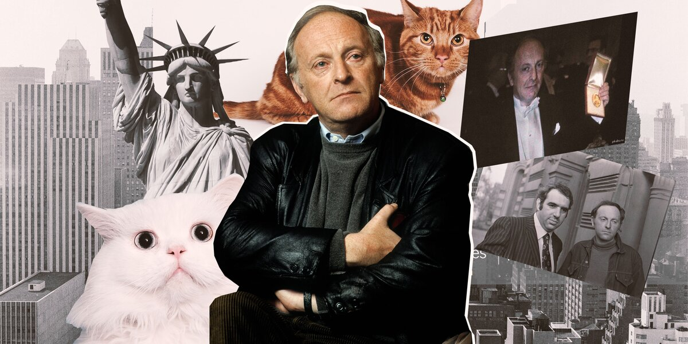
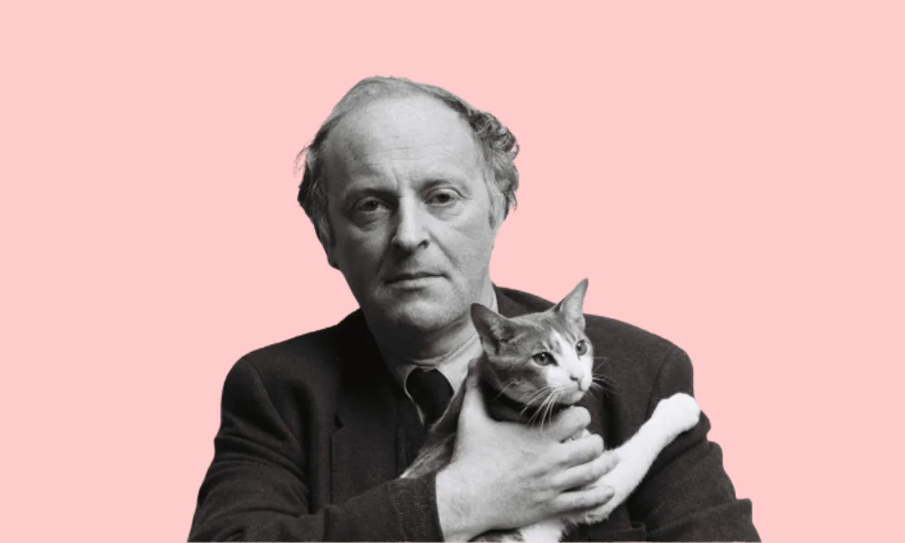

Бродский правда любил котов?
Для Иосифа Бродского коты были буквально тотемными животными — он любил рисовать их, использовать кошачьи словечки в речи и даже признавался в своей мечте стать котом.
Почему он так любил их?
Бродский боготворил котов потому, что сам себя сравнивал с ними. В письме, которое отец Иосифа, Александр Иванович Бродский, пишет сыну в ссылку, есть призыв не унывать и брать пример с котов, которые всегда оптимистичны. А во время первой поездки в Литву в первой половине августа 1966 года, в первый же вечер Иосиф Бродский подобрал облезлого котенка, весь день носил его за пазухой и очень гордился, когда тот замурлыкал.
Цитаты Бродского о котах
- "Смятенный дух с его ворчаньем, смири своим святым урчаньем"
- "Вот, смотрите, кот. Коту совершенно наплевать"
- "Чем я хуже кота"?
Это все из детсва?
Из автобиографическое эссе Бродского «Полторы комнаты» можно узнать, что его любовь к представителям семейства кошачьих зародилась ещё в нежном возрасте. Свою мать Марию Моисеевну он называл ласковым именем Киса (хотя она этого и не одобряла), а с отцом Александром Ивановичем любил произносить слова нараспев — в доме то и дело раздавалось мяуканье. Мужчины даже придумали себе прозвища: «большой кот» и «маленький кот».

Читать стихи Бродского о котах
- "В твоих часах не только ход, но тишь..."
- "Ода коту Пасику"
- "Я пробудился весь в поту..."
- "Про кота"
- "Слон и Маруська"
Последний любимец Бродского
Значительную часть своей американской жизни в изгнании поэт провел в одиночестве, когда единственным членом его семьи был любимый кот по имени Миссисипи. В 1990 году Бродский женился, и его жена Мария стала звать обоих своих мужчин — домашнего котяру Миссисиппи и Иосифа — котами: «Эй, коты, идите сюда!» Оба откликались на зов немедленно. Иногда Бродский вывозил своего кота Миссисипи из Нью-Йорка на природу в деревню Саут-Хэдли. Там вырвавшийся из каменных джунглей кот увлеченно преследовал белок, а Бродский с удовольствием наблюдал за ним из окна.
Кот, который всегда будет ждать тебя
Миссисипи пережил своего хозяина. Лев Лосев, занимавшийся архивом поэта после его смерти, вспоминал об этом так: «Осиротелый старик, кот Миссисипи прыгал на стол, укладывался на рукопись, пахнущую хозяином, и тут же крепко засыпал. Заснув, он пускал слюнку, но я не решался его согнать, поскольку догадывался, что он имеет больше прав на эти бумаги, чем я. Если будущим исследователям творчества Бродского попадется в черновике расплывшееся пятно, знайте — это кот наплакал…».